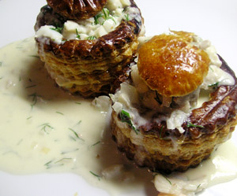

Fischpastetchen
5 von 6Eine Zwiebel in viel Butter andämpfen, danach etwas Mehl dazu geben. Mit 3 Dl Weisswein ablöschen und etwas einkochen. 2 Dl Rahm beigen ebenfalls etwas einkochen. Mit Salz und Pfeffer würzen. Fischragout (nach Tagesangebot, wenn möglich verschiedene Sorten) beigeben, ca. 5 Minunten garen. Dill darunterziehen und mit den vorgewärmten Pastetchen servieren.
